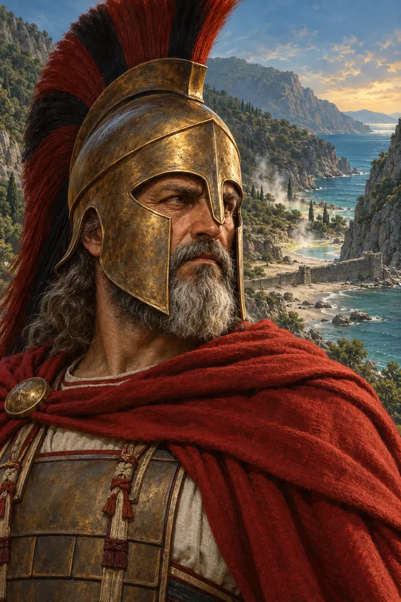
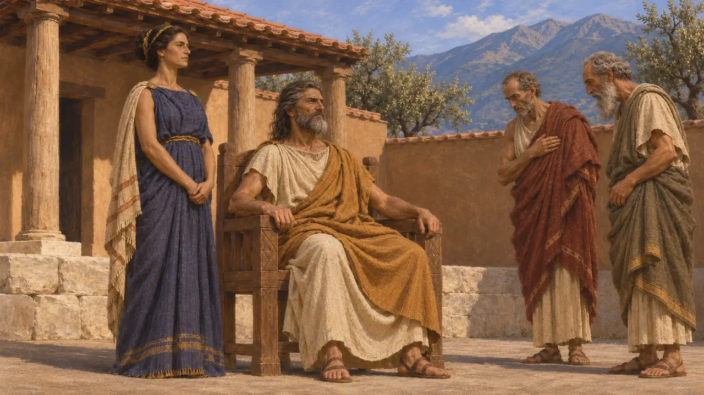
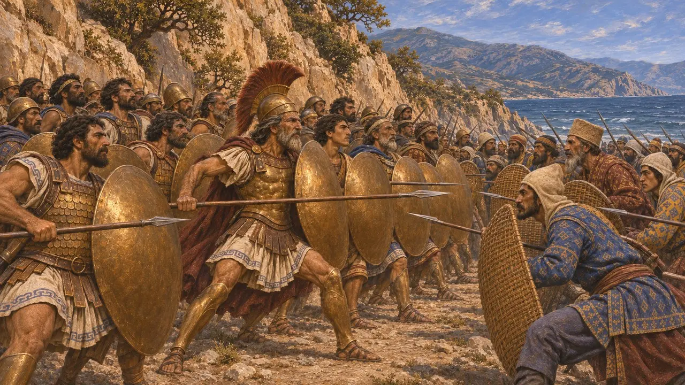
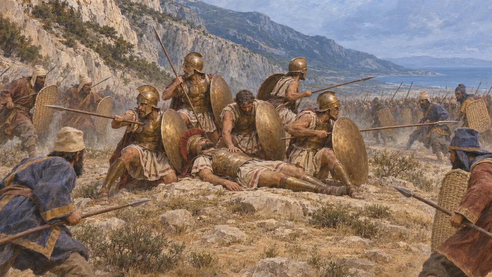
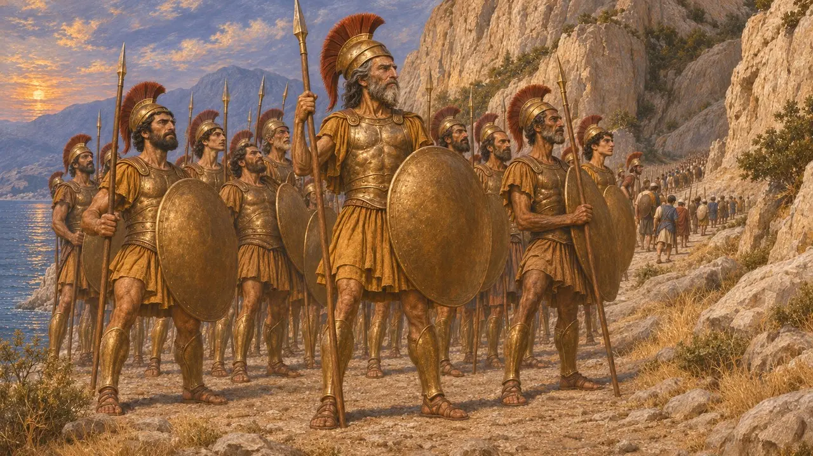
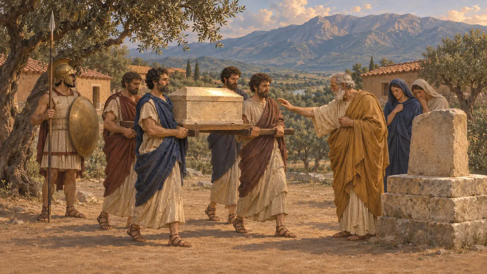

Леонид
Царь Спарты из рода Агиадов и командующий при Фермопилах, погиб в 480 году до н. э.
В игре: Уровень 10: Жаркие Ворота
Леонид — царь Спарты из рода Агиадов. В 480 г. до н. э. он командовал греческим войском, оборонявшим Фермопильский проход от Ксеркса, и погиб там, когда персы нашли обходной путь. Почти всё, что о нём известно, восходит к Геродоту, а позднейшие греческие писатели сделали его гибель образцом спартанской доблести.
В игре: Летопись называет Леонида спартанским царём при Фермопилах. В её заметке не упомянуты фиванцы, которые, по словам Геродота, тоже остались, хотя позднее сдались персам.

Младший сын из дома Агиадов
Античное свидетельствоПо словам Геродота, Леонид был сыном царя Анаксандрида от первой жены, а его единокровный брат Клеомен, сын второй жены, родился раньше и первым стал царём. Леониду не прочили престол, но его старший родной брат Дорией погиб на Сицилии. Когда около 490 г. до н. э. Клеомен умер, царём стал Леонид; он был женат на Горго, дочери Клеомена.
Herodotus 5.39-41, 7.204-205, 7.239

Удержание прохода
Античное свидетельствоЛетом 480 г. до н. э. Леонид возглавил войско, которое Геродот перечисляет отряд за отрядом: триста спартанцев, отобранных из тех, у кого были живые сыновья, а также другие пелопоннесцы, феспийцы, фиванцы, фокейцы и локры. Современные подсчёты дают около шести-семи тысяч человек. По словам Геродота, основное спартанское войско осталось дома ради праздника Карнеи. Два дня греки отбивали атаки в узком проходе, в том числе атаки Бессмертных.
Herodotus 7.202-212

Тропа и последний бой
Античное свидетельствоЭфиальт Малийский ночью провёл Гидарна и его воинов по Анопейской тропе, и охранявшие её фокийцы отступили. Геродот приводит две версии того, что было дальше: либо Леонид отослал большую часть союзников, либо они ушли сами. По его словам, Леонид пал в бою, греки сражались за его тело, а последние из них погибли на невысоком холме. Он добавляет, что Ксеркс велел отрубить голову павшему царю и насадить её на кол.
Herodotus 7.213-225, 7.238

Почему он остался
СпорныйПо словам Геродота, оракул предрёк, что падёт либо Спарта, либо спартанский царь, и Леонид желал славы для Спарты. Он также утверждает, что фиванцев удерживали в качестве заложников, — это обвинение Плутарх позднее назвал проявлением злонамеренности Геродота по отношению к Фивам. Современные историки спорят, прикрывал ли Леонид отступление союзников или следовал спартанскому обычаю. Ни один персидский источник не упоминает об этой битве, а цифры Геродота о численности и потерях войска Ксеркса считаются сильно завышенными.
Herodotus 7.220-222; Plutarch, On the Malice of Herodotus; P. Cartledge, Thermopylae, 2006

Изречения и кости
Позднейшая легендаПозднейшие авторы дополнили рассказ изречениями и сценами. У Плутарха, писавшего примерно шесть веков спустя, Леонид предлагает персам прийти и самим взять оружие греков, а Диодор описывает ночную вылазку к шатру Ксеркса. Путешественник Павсаний сообщает, что кости царя были перенесены в Спарту через сорок лет после битвы. Ни одно из этих преданий нельзя сверить с более ранними источниками.
Plutarch, Sayings of Spartans; Diodorus 11.9-10; Pausanias 3.14.1
Источники
- Herodotus, Histories, books 5 and 7
- Diodorus 11.4-11
- Plutarch, Sayings of Spartans; On the Malice of Herodotus
- Pausanias, Description of Greece 3.14.1
- P. Cartledge, Thermopylae: The Battle That Changed the World, 2006
- J. F. Lazenby, The Defence of Greece 490-479 BC, 1993